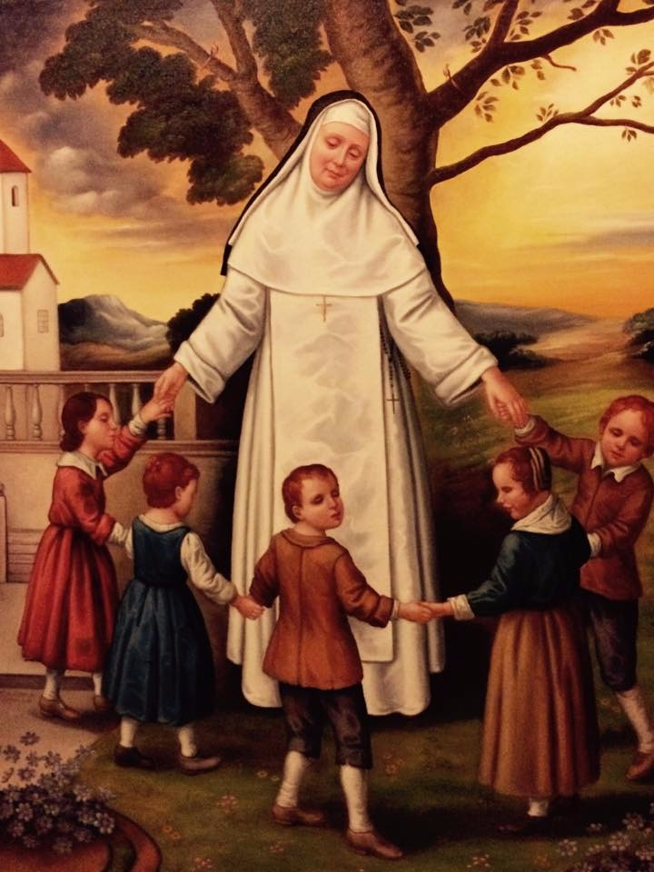
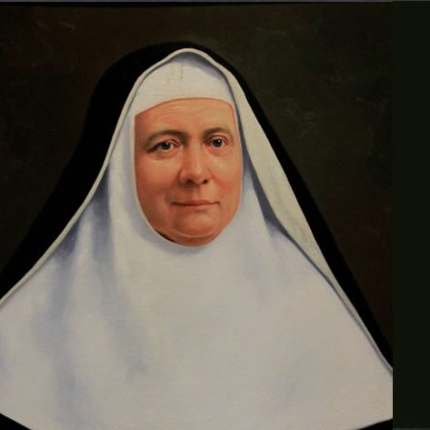

Matemática · 4.º grado
Practicamos con fracciones
Refuerza lo aprendido con ejercicios interactivos de suma y resta.
Abrir fichaEducamos con fe y esperanza
Bienvenidos a nuestra familia educativa. Un espacio para aprender, descubrir y crecer juntos, con el amor de Dios y la luz de nuestra identidad dominica.

«Predicar la Verdad y portar la Luz de Cristo»
Hermanas Dominicas de la Inmaculada ConcepciónAcceso de estudiantes · Primaria
Elige tu grado e ingresa
a tu espacio de aprendizaje.
Al ingresar, escribe tu primer nombre y tu número de DNI o documento.

Nuestra identidad dominica
La Madre Eduviges Portalet fundó en 1869, en Toulouse, Francia, la Congregación de las Hermanas Dominicas de la Inmaculada Concepción.
Su entrega a la educación de niños ciegos nos invita a mirar a cada persona con amor y a poner lo que aprendemos al servicio de los demás.
Conocer su vida y su legadoCrecemos en el amor a Dios.
Aprendemos con honestidad.
Compartimos para ayudar.
Aprender, practicar y descubrir
Matemática · 4.º grado
Refuerza lo aprendido con ejercicios interactivos de suma y resta.
Abrir fichaComunicación
Un espacio para nuevas lecturas y actividades de comprensión y escritura.
PróximamenteCiencia y otras áreas
Un espacio para nuevos recursos que despierten la curiosidad y la investigación.
PróximamenteSeguimos creciendo
Ingresa con tu grado para acceder a tus actividades y evaluaciones.
Para nuestra comunidad